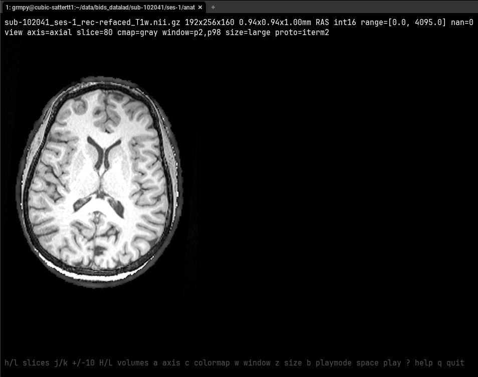
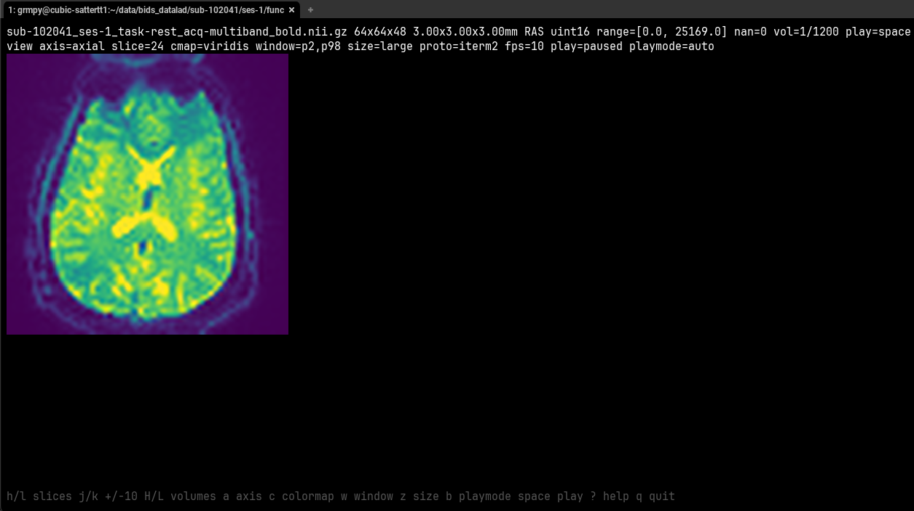
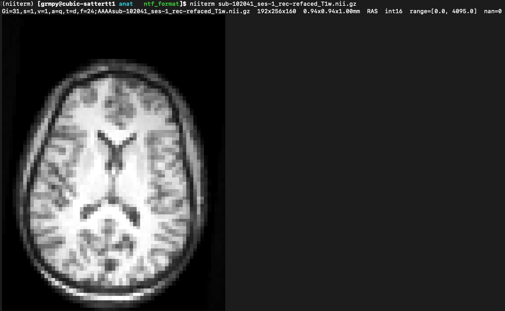

Quick Start
Install with Rust and run directly from a local clone. A standard
rustup install is the recommended default. A micromamba
install is also supported when you want a self-contained HPC-friendly
setup.
Install with rustup
git clone https://github.com/PennLINC/niiterm.git
cd niiterm
curl --proto '=https' --tlsv1.2 -sSf https://sh.rustup.rs | sh
source "$HOME/.cargo/env"
cargo install --path . --lockedInstall inside micromamba
git clone https://github.com/PennLINC/niiterm.git
cd niiterm
micromamba create -n niiterm -c conda-forge rust
micromamba activate niiterm
cargo install --path . --locked --root "$CONDA_PREFIX"Common commands
niiterm sub-01_T1w.nii.gz
niiterm --axis sag --slice 25% sub-01_T1w.nii.gz
niiterm --axis z --slice 0.25 sub-01_T1w.nii.gz
niiterm --snapshot mid3 --width 50% sub-01_T1w.nii.gz
niiterm --interactive sub-01_T1w.nii.gz
niiterm --interactive --layout triptych sub-01_T1w.nii.gz
niiterm --interactive --play sub-01_task-rest_bold.nii.gz
niiterm --interactive --protocol iterm sub-01_task-rest_bold.nii.gz--protocol iterm if
auto-detection chooses kitty.
Terminal Compatibility
niiterm works best when the terminal supports a real graphics protocol. When that is not available, it falls back to half-block rendering.
| Terminal | Status | Notes |
|---|---|---|
| WezTerm | Explicitly tested |
Works well. Remote or HPC sessions may need
--protocol iterm for interactive mode.
|
| iTerm2 | Expected to work | Intended to work with graphics rendering, but not explicitly re-verified in the current manual pass. |
| Kitty | Expected to work | Intended to work through the kitty graphics protocol, but not explicitly re-verified in the current manual pass. |
| Ghostty | Expected to work | Likely fine through kitty-compatible rendering, but not explicitly re-verified in the current manual pass. |
| Sixel-capable terminals | Partially supported | One-shot sixel output is supported. Interactive behavior is less thoroughly tested. |
| Apple Terminal.app | Fallback only | Falls back to block rendering. Usable for rough QC, but much lower fidelity than WezTerm, iTerm2, Kitty, or sixel graphics. |
| Generic text-only terminals | Fallback only | Half-block rendering only. |
Troubleshooting WezTerm
If interactive mode shows placeholder blocks and the header says
proto=kitty, rerun with:
niiterm --interactive --protocol iterm your_file.nii.gzInteractive Viewer
Interactive mode is designed for quick QC, not just still rendering.
You can scrub slices, switch axes, step through 4D volumes, and play
low-resolution timeseries while balancing detail against flicker. For
structural QC, --layout triptych shows linked sagittal,
axial, and coronal panes together.
Controls
h/lor left/right: previous or next slicej/kor down/up: move slice by 10Tab: cycle the active pane in triptych layoutH/L: previous or next 4D volumea: cycle axis in single-pane mode, or the active pane in triptych modec: cycle colormapw: cycle window presetz: cycle display sizeb: cycle playback render modespace: play or pause a 4D series+/-: change playback FPSg: jump to the middle slice, or recenter all panes in triptych mode?: toggle helpqoresc: quit
Interactive size modes
native: keep the source image close to its original resolutioncomfortable: moderate upscale for easier inspectionlarge: larger upscale for low-resolution modalities like BOLD or ASL
Playback render modes
auto: keep detail at native size, switch to smoother block playback at larger sizessmooth: prioritize smooth playback using block renderingdetail: keep the richer graphics protocol during playback and accept more flicker
Static QC snapshot
--snapshot mid3: render a one-shot mid sagittal / axial / coronal triptych- Panel order is fixed as
sag|ax|cor --width 50%scales the one-shot output relative to terminal width
CLI Reference
The built-in help is the quickest reference:
niiterm --helpCore options
| Option | Purpose |
|---|---|
FILE |
Path to the .nii or .nii.gz file to inspect. |
--interactive |
Launch the interactive viewer instead of printing a single slice. |
--axis <axial|ax|z|coronal|cor|y|sagittal|sag|x> |
Choose the initial viewing plane or active pane after RAS reorientation. |
--slice SPEC |
Choose the initial slice as an absolute index, percent like 25%, or fraction like 0.25. |
--coord X,Y,Z |
Choose the initial RAS voxel coordinate. |
--mm X,Y,Z |
Choose the initial world-space coordinate in millimeters. |
--volume N |
Choose the initial 4D volume index. |
--play |
Start 4D playback immediately in interactive mode. |
--fps N |
Set playback frame rate for interactive 4D playback. |
--colormap |
Override the modality-aware default colormap. |
--window SPEC |
Window as pLO,pHI, raw LO,HI, or
full.
|
--width SPEC |
One-shot width as absolute columns or a percentage like 50%. |
--protocol auto|kitty|iterm|sixel|blocks |
Choose the rendering backend. Use iterm for WezTerm over SSH when needed. |
--snapshot mid3 |
Render a static mid-slice sagittal/axial/coronal QC triptych in fixed sag|ax|cor order. |
--layout single|triptych |
Choose the interactive layout. triptych enables linked tri-planar browsing. |
--no-stats |
Hide the metadata header above one-shot output. |
-v, -vv |
Increase logging verbosity. |
Examples
niiterm sub-01_T1w.nii.gz
niiterm --axis sag --slice 25% sub-01_T1w.nii.gz
niiterm --axis z --slice 0.25 sub-01_T1w.nii.gz
niiterm --coord 90,110,76 sub-01_T1w.nii.gz
niiterm --snapshot mid3 --width 50% sub-01_T1w.nii.gz
niiterm --interactive --layout triptych sub-01_T1w.nii.gz
niiterm --interactive --protocol iterm sub-01_task-rest_bold.nii.gz
niiterm --interactive --play --fps 12 sub-01_task-rest_bold.nii.gz
niiterm --window p1,p99 --colormap turbo sub-01_cbf.nii.gzScreenshots and Movies
The current screenshots and playback clips live under
docs/assets/ and are shared by the README and docs site.
Screenshots



Movies
Asset naming and storage guidance still lives in
docs/assets/README.md.
Development
cargo fmt --check
cargo clippy --all-targets -- -D warnings
cargo test